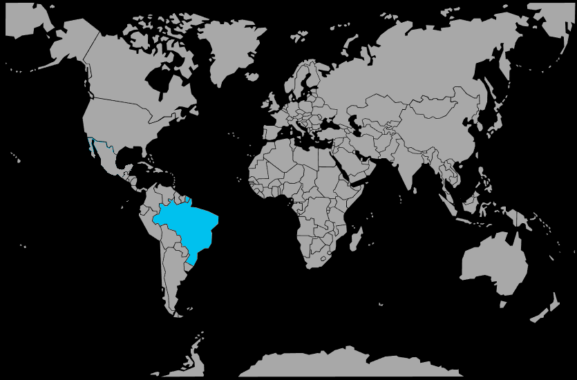

Systématique
- Ordre : Cichliformes
- Famille : Cichlidae
- Sous‑famille : Geophaginae
- Genre : Apistogramma
- Espèce : Apistogramma gossei
Apistogramma gossei est un cichlidé nain rare en aquariophilie, originaire de Guyane, présentant une robe discrète avec une ligne latérale sombre et des reflets subtils.
Il atteint environ 6 à 7 cm pour les mâles, un peu moins pour les femelles, et se prête bien aux aquariums de biotope guyanais ou aux bacs densément plantés.
L’espèce est territoriale mais relativement calme, avec des interactions principalement centrées sur la reproduction et la défense de petites zones de fouille.
En aquarium, elle se maintient en couple ou en petit harem, avec un décor riche en racines, feuilles et caches, et des colocataires paisibles de petite taille occupant d’autres niveaux d’eau.
Mode : pondeur en cavité; la femelle pond dans une petite grotte, sous une racine ou un élément de décor, et assure la garde rapprochée des œufs et des alevins.
Une eau douce, acide et très propre favorise la réussite des pontes; le mâle défend le territoire global, tandis que la femelle dirige le nuage d’alevins près du sol et des abris.
Dimorphisme sexuel : les mâles sont plus grands, avec des nageoires impaires plus développées et des couleurs légèrement plus marquées, alors que les femelles deviennent plus jaunes en période de reproduction.
Espérance de vie : en captivité, Apistogramma gossei vit environ 3 à 5 ans, selon la qualité de l’eau et de la nourriture.
L’espèce fréquente les petits cours d’eau forestiers, à courant faible, au fond sablo‑vaseux recouvert de feuilles et de débris végétaux, sous un couvert végétal dense.
Répartition
Origine naturelle :
- Guyane française et extrême nord du Brésil.
- Bassin du fleuve Oyapock et de ses affluents frontaliers.
- Affluents forestiers et petits ruisseaux du plateau guyanais oriental.
Apistogramma gossei est associé aux réseaux de petits cours d’eau forestiers du bassin de l’Oyapock et de zones voisines, dans une eau douce, acide et ombragée.
Paramètres de maintenance
Température : 24 à 27 °C.
pH : 4,5 à 6,5, eau nettement acide.
GH : 0 à 5 °dGH, eau très douce.
Courant : faible, avec beaucoup de zones calmes et de caches au sol.
Volume conseillé : à partir de 80 L pour un couple ou un trio, dans un bac très structuré.
Régime alimentaire
Régime : micro‑carnivore; il se nourrit de petits invertébrés, larves d’insectes et micro‑faune benthique.
En aquarium, il apprécie particulièrement les nourritures vivantes et congelées de petite taille (artémias, daphnies, micro‑vers), avec une transition possible vers des granulés fins.
Une alimentation variée, distribuée en petites rations, soutient la vitalité, les couleurs et la réussite des reproductions.